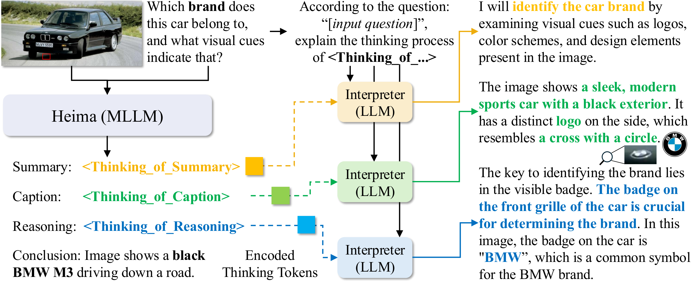
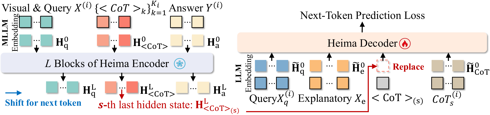
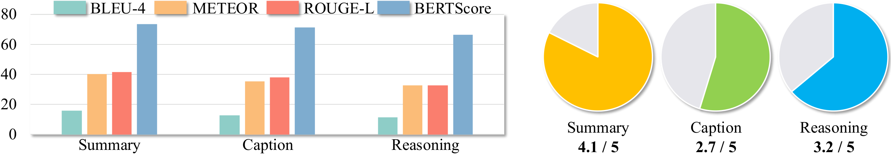

Heima: Efficient Reasoning with Hidden Thinking
论文信息 - 论文：Efficient Reasoning with Hidden Thinking - 作者：Xuan Shen, Yizhou Wang, Yufa Zhou, Xiangxi Shi, Pu Zhao, Yanzhi Wang, Jiuxiang Gu - 机构：Zhejiang University / Adobe / Duke / Oregon State / Northeastern - 投稿方向：ICML 2026（accepted） - arXiv ID：2501.19201v2 - 代码：shawnricecake/Heima
本文基于以下本地材料整理：
- 论文 tex 源码：
arXiv-2501.19201v2/main.tex、sections/*.tex- 论文图片：
arXiv-2501.19201v2/figures/*.pdf- 官方代码：
Heima/- 本文图片导出目录：
assets/heima/
一、核心问题
Chain-of-Thought（CoT）推理已成为提升多模态大语言模型（MLLM）复杂问题求解能力的关键技术。然而，CoT 推理需要生成大量中间文本（对复杂问题可达数百 tokens），导致高昂的推理成本。
核心问题：CoT 的冗长文本包含大量冗余信息，能否将推理过程压缩到隐空间，以极少的"思考 token"替代冗长的文本 CoT，从而大幅提升推理效率？
二、核心思路/方法
Heima（hidden llama 的谐音）提出了一套完整的 CoT 压缩框架：用 MLLM 将多阶段 CoT 推理压缩为极少量的思考 token，再用纯文本 LLM 作为解释器重建推理过程。

图 1：Heima 框架总览，用一个具体 Demo（识别图中汽车品牌）串联全流程。图片分为上下两栏。
上栏 (a) Heima 隐空间推理（MLLM）：
输入为一张黑色 BMW M3 的图片和问题"Which automotive brand does this car belong to, and what visual cues or badges indicate that?"。Heima 不生成冗长的文本 CoT，而是用三个思考 token——<Thinking_of_Summary>、<Thinking_of_Caption>、<Thinking_of_Reasoning>——在隐空间中完成推理，最终输出结论"The image shows a black BMW M3 driving down a road"。每个思考 token 只占 1 个 token 位置，但它的 last hidden state 编码了对应推理阶段所需的全部信息（包括视觉特征）。Heima 的答案基于隐推理直接生成，跳过了传统 CoT 中数百个 token 的文本展开过程。
下栏 (b) Heima 解释器重建推理（纯 LLM）： 三个独立的纯文本解释器（基于 Llama-3.1-8B-Instruct）分别接收对应思考 token 的 last hidden state。关键设计：解释器不看图像，只接收思考 token 的隐表示 + 问题文本 + 解释性 prompt。Summary 解释器重建出"我将通过检查 logo、配色和设计元素来识别汽车品牌"；Caption 解释器重建出"图像显示一辆 sleek 的黑色现代跑车，侧面有一个十字加圆圈的独特 logo"；Reasoning 解释器重建出"前格栅上的徽章是 BMW，这是 BMW 品牌的常见标志，确认了品牌身份"。
这一 Demo 直接验证了 Heima 的核心主张：思考 token 的隐空间表示不仅保留了语言推理信息，还编码了细粒度的视觉特征（如 BMW logo 的十字+圆圈形状），供纯文本 LLM 在不看原图的情况下重建。*
2.1 思考 Token 与渐进式蒸馏
思考 Token（Thinking Token）：为每个 CoT 阶段（Summary、Caption、Reasoning）定义一个特殊的 vocabulary token（如 <Thinking_of_Summary>），将整个阶段的文本推理压缩到单个 token 的隐状态中。
渐进式蒸馏（Progressive Distillation）：不是一次性将所有 CoT 阶段替换为思考 token，而是逐阶段渐进替换：
- Stage 0：全部使用文本 CoT（标准 LLaVA-CoT 训练）
- Stage 1：仅将 Summary 替换为
<CoT>_1，其余保持文本 - Stage 2：将 Summary + Caption 替换为
<CoT>_1,<CoT>_2 - Stage 3：全部三个阶段都替换为思考 token
- Recovering Stage：最终用纯思考 token 额外微调一步，优化跨阶段 transition

*图 2：渐进式蒸馏（Progressive Distillation）的四个训练阶段。每行展示一个阶段使用的训练数据格式，从左到右的三个色块分别对应 Summary（蓝色）、Caption（黄色）、Reasoning（绿色）三个阶段，相同颜色 = 同一类推理内容。最后一列为答案（灰色）。
Stage 0（无思考 token）： 全部三个阶段都使用完整文本 CoT + 最终答案。这是标准的 LLaVA-CoT SFT 格式，模型学习"看图和问题 → 生成三段文本推理 → 给出答案"。此阶段的训练数据即为原始 LLaVA-CoT-100k，不做任何修改。
Stage 1：
Summary 阶段的文本 CoT 被替换为一个 <Thinking_of_Summary> 思考 token。Caption 和 Reasoning 仍保持文本 CoT。模型在此阶段学习将"问题复述/摘要"的推理内容压缩到单个 token 中，同时仍依赖 Caption 和 Reasoning 的文本信号来维持答案质量。这是最关键的一步——如果一步到位把所有 CoT 都替换掉，模型会因分布剧烈偏移而崩溃。
Stage 2：
Summary 和 Caption 两个阶段都替换为思考 token（<Thinking_of_Summary> + <Thinking_of_Caption>）。只有 Reasoning 阶段保留文本 CoT。模型在此阶段学习将视觉描述（Caption）也编码到隐空间，训练难度进一步增加。
Stage 3： 全部三个阶段都替换为思考 token + 答案。这是最终的 Heima 推理格式。模型仅凭三个思考 token 的隐状态完成全部推理并输出答案，完全不再依赖文本 CoT。
Recovering Stage（图中未单独展示）： 在 Stage 3 之后额外执行一步纯思考 token 的蒸馏（学习率从 1e-4 降至 1e-5），优化跨阶段的 transition 和 token 间的交互，确保整个隐推理链的信息流动是连贯的。消融实验表明去掉这一步会使平均准确率从 58.0 降至 56.6。*
训练数据集 $D_H$ 将原始 CoT 文本替换为思考 token：
蒸馏目标为标准 next-token prediction：
2.2 信息论分析
论文从信息论角度证明了压缩的合理性。定义 $X$ 为输入，$\mathrm{CoTs}$ 为原始文本推理，$\texttt{<CoTs>}$ 为思考 token，$Y$ 为输出答案。
核心定理：由于 $\texttt{<CoTs>}=f(X,\mathrm{CoTs})$，由数据处理不等式有：
等价于：
关键结论：
- 思考 token 永远不可能比原始 CoT 包含更多关于 $Y$ 的信息
- 但只要 $I(Y;\texttt{<CoTs>}\mid X) > 0$，就保留了非平凡的推理信息
- 信息损失量 $I(Y;\mathrm{CoTs}\mid X,\texttt{<CoTs>})$ 量化了压缩带来的信息差距——解释器就是用来经验性地评估这个差距的大小
2.3 解释器（Interpreter）设计
为了量化信息差距，论文设计了基于纯 LLM 的解释器，将思考 token 的隐状态重构回文本 CoT。

*图 3：解释器（Interpreter）训练流程，展示如何将思考 token 的隐状态解码为文本 CoT。图片包含左右两个 panel。
左栏 (a) Heima 推理——隐状态生成（冻结，不训练）：
Heima（冻结的 MLLM）基于图像（Vision Input）和问题（Text Query）执行推理。它生成一串 token 序列：先输出三个阶段的思考 token（每个阶段 1 个特殊 token），再输出答案。对于第 s 个思考 token <CoT>_(s)，Heima 在其 Transformer 最后一层产生一个 last hidden state $H_{\texttt{<CoT>}_{(s)}} \in \mathbb{R}^{d}$（$d$ 为 hidden dimension，Llama-3.2-11B 中为 4096）。这个向量就是"压缩后的推理"——单个 token 的文本符号本身不携带信息，所有推理内容都编码在这个 4096 维向量中。
右栏 (b) 解释器训练——隐状态替换 + 文本重建（可训练）：
解释器是一个基于纯 LLM（Llama-3.1-8B-Instruct）的 LoRA 可训练模型。训练时：① Heima 生成思考 token 并提取 H_Caught（即 $H_{\texttt{<CoT>}_{(s)}}$）；② 在解释器的输入序列中，思考 token 的 embedding 向量被 $H_{\texttt{<CoT>}_{(s)}}$ 替换——这是核心操作，发生在 word embedding 层之后、Transformer 第一层之前；③ 解释器接收的完整输入为"解释性 prompt（According to the question, can you explain the thinking progress?）+ 纯文本问题 + 被替换的隐状态"；④ 解释器用标准 next-token prediction 自回归地生成重建的文本 CoT。
为何不直接输入 token 符号？
如果只输入 <CoT>_(s) 这个特殊 token 的文本符号（不带隐状态），解释器看到的只是一个固定的 token ID，没有任何与具体输入图像/问题相关的内容信息。Heima 的推理信息存储在思考 token 的 hidden state 中（隐状态随输入不同而变化），而非其 token identity（token 符号在所有样本中是固定的）。用 $H_{\texttt{<CoT>}_{(s)}}$ 替换 embedding 等于把 Heima 内部的"思考内容"直接传递给解释器。
训练细节： 解释器用 LoRA（rank=16，alpha=32）微调，学习率 5e-4，batch size=8，1 个 epoch。Heima 全程冻结。三个 CoT 阶段各训练一个独立的解释器（共 3 个），评估在 4300 个测试样本上进行。*
训练方式：
- 使用冻结的 Heima 生成思考 token
- 提取思考 token 的 last hidden state $H_{\texttt{<CoT>}_{(k)}}$
- 在解释器中，用 $H_{\texttt{<CoT>}_{(k)}}$ 替换 token embedding，而非直接输入 token 符号
- 使用解释性 prompt 引导重构："According to question: $X_q$, can you explain the thinking progress $\texttt{<CoT>}_{(k)}$?"
关键设计：解释器为纯文本 LLM，不接收图像输入。这意味着思考 token 的隐表示中必须编码了视觉信息，解释器才能重构出包含视觉细节的推理过程。
三、训练目标
3.1 数据集准备
原始 CoT 训练数据集定义如下（$N$ 为总样本数）：
其中 $X$ 为视觉 + 问题输入，$\mathrm{CoTs} = \{\mathrm{CoT}_{(k)}\}_{k=1}^{K_i}$ 为 $K_i$ 个阶段的文本 CoT，$Y$ 为最终答案。
将每个阶段的 CoT 文本替换为对应的思考 token，得到 Heima 数据集：
其中 $\texttt{<CoTs>} := \{\texttt{<CoT>}_{(k)}\}_{k=1}^{K_i}$，每个思考 token 在 vocabulary 中定义为唯一的特殊 token（如 <THINKING_OF_SUMMARY>）。
3.2 蒸馏目标
标准 next-token prediction 损失：
3.3 渐近式蒸馏
$M$ 个训练阶段，第 $s$ 阶段的训练数据为：
第 $s$ 阶段的优化目标为：
渐进式蒸馏结束后，额外执行一步 Recovering Stage（纯思考 token 微调）。
3.4 解释器（Interpreter）训练目标
第 $k$ 个解释器的训练集：
训练目标：
四、实验与结果
4.1 实验配置
| 组件 | 模型 | 训练框架 |
|---|---|---|
| Heima (MLLM) | Llama-3.2-11B-Vision-Instruct | LoRA (rank=16, alpha=32) |
| Interpreter (解释器) | Llama-3.1-8B-Instruct | LoRA |
| 辅助验证 | LLaVA-Next-Vicuna-7B | LoRA |
- 训练数据：LLaVA-CoT-100k（100k 图像-QA 对，含 Summary/Caption/Reasoning 三阶段 CoT）
- 训练硬件：8× H100 GPU
- 评估基准：MMStar, MMBench V1.1, MMVet, MathVista, AI2D, HallusionBench
- 评估框架：VLMEvalKit
训练超参数（附录 Table A1-A3）：
| 参数 | 渐进蒸馏 | Recovering | 解释器 |
|---|---|---|---|
| Epoch | 1 | 1 | 1 |
| Batch Size | 6 | 8 | 8 |
| Gradient Accumulation | 1 | 1 | 1 |
| Optimizer | AdamW | AdamW | AdamW |
| Weight Decay | 0.01 | 0.01 | 0.01 |
| Learning Rate | 1e-4 | 1e-5 | 5e-4 |
| LR Schedule | cosine | cosine | cosine |
| Warmup Steps | 100 | 100 | 100 |
| Clip Grad Norm | 1 | 1 | 1 |
| Activation Checkpointing | TRUE | TRUE | TRUE |
| FSDP | TRUE | TRUE | TRUE |
| Bfloat16 | TRUE | TRUE | TRUE |
4.2 推理效率与精度
| 方法 | MMStar | MMBench | MMVet | MathVista | AI2D | Hallusion | Avg |
|---|---|---|---|---|---|---|---|
| Llama3.2-11B | 48.1 (140) | 58.2 (65) | 50.2 (106) | 50.3 (240) | 68.5 (75) | 37.2 (91) | 52.1 |
| LLaVA-CoT | 54.0 (181) | 70.7 (155) | 49.8 (227) | 50.9 (216) | 77.6 (179) | 63.8 (178) | 61.1 |
| Heima (w/o prog.) | 49.7 (13) | 72.5 (13) | 39.0 (72) | 39.3 (14) | 75.9 (13) | 61.3 (16) | 56.3 |
| Heima (w/o rec.) | 49.8 (13) | 71.6 (13) | 42.8 (80) | 39.8 (14) | 77.3 (13) | 58.5 (18) | 56.6 |
| Heima | 49.9 (13) | 72.8 (13) | 43.3 (76) | 43.6 (14) | 77.5 (13) | 60.6 (17) | 58.0 |
表 1：主实验结果。括号内为平均生成 token 数（保留一位小数：MMStar 12.8, MMBench 12.9, MMVet 75.8, MathVista 13.8, AI2D 12.7, HallusionBench 16.9），Avg 列为 6 个基准的平均准确率。Heima 将 token 数降至原始 LLaVA-CoT 的约 6-8%（如 MMStar 上 12.8 vs 181.0）。"w/o prog." 表示一次性蒸馏所有 CoT 阶段（非渐进式），"w/o rec." 表示去掉最后的 recovering stage。
关键发现：
- Heima 用不到 10% 的 token 保持了 LLaVA-CoT 的绝大部分精度（58.0 vs 61.1）
- 在 MMBench 上甚至超越了 LLaVA-CoT（72.8 vs 70.7），说明压缩过程可能去除了噪声
- 渐进式蒸馏提升 1.7 个百分点（58.0 vs 56.3），recovering stage 提升 1.4 个百分点（58.0 vs 56.6）——两者缺一不可
- 相比无 CoT 的 Llama3.2-11B 基线，Heima 在全部 6 个基准上均有大幅提升（58.0 vs 52.1）
4.3 跨模型架构泛化
在 LLaVA-Next-Vicuna-7B 上的验证（完整结果来自论文附录 Table A6）：
| 方法 | MMStar | MMBench | MMVet | MathVista | AI2D | Hallusion | Avg |
|---|---|---|---|---|---|---|---|
| LLaVA-Next-Vicuna-7B | 37.7 (3) | 65.6 (2) | 33.4 (144) | 30.2 (94) | 67.0 (2) | 32.3 (69) | 44.4 |
| LLaVA-Next-Vicuna-7B (CoT) | 46.5 (176) | 71.5 (155) | 47.5 (231) | 41.8 (191) | 77.3 (166) | 45.1 (150) | 55.0 |
| Heima (7B) | 44.6 (13) | 73.5 (13) | 43.4 (69) | 40.6 (13) | 77.1 (13) | 43.3 (16) | 53.8 |
同样将 token 降至约 6%，保持了 CoT 精度的 97.8%（53.8 vs 55.0），验证了方法的通用性（不限于 Llama 模型家族）。值得注意的是在 MMBench 上 Heima (7B) 甚至超越了 CoT 版本（73.5 vs 71.5）。
4.4 解释器重建质量

*图 4：解释器重建质量的定量评估。包含两个子图，在 4300 个测试样本上评估解释器重建的文本与原始 CoT 文本的相似度。
子图 (a) 自动评估指标（左，四组柱状图）： 展示 BLEU-4、METEOR、ROUGE-L、BERTScore 四个指标的结果，每组有三根柱子分别对应 Summary（蓝色）、Caption（黄色）、Reasoning（绿色）。横轴为评估指标，纵轴为分数。结果呈现一致的阶梯状：Summary > Caption > Reasoning。具体数据——BLEU：15.9 / 12.8 / 11.2；METEOR：40.1 / 35.5 / 32.7；ROUGE-L：41.6 / 37.9 / 32.7；BERTScore：73.4 / 71.4 / 66.6。
Summary 阶段重建质量最高（BERTScore 73.4），因为 Summary 本质是对问题的复述——"识别汽车品牌需要检查 logo 和设计元素"——这更多依赖文本理解，不需要太多视觉信息。Caption 居中（71.4），因为它需要从隐状态中提取图像的视觉描述，有一定难度。Reasoning 最低（66.6），因为 Reasoning 涉及多步逻辑推理链（"logo 是十字加圆圈 → 这是 BMW 的特征 → 确认品牌为 BMW"），任何一个环节出错都会影响最终匹配。但 BERTScore 66.6 仍属于"语义高度相关"区间，说明压缩保留了推理的核心逻辑。
子图 (b) GPT-4o 语义相似度评估（右）： 使用 GPT-4o 作为评判器，对三个阶段的 4300 个重建-原始文本对进行 1-5 分打分——1 分表示完全无关（不同主题、无内容重叠），5 分表示几乎完全一致（仅有措辞差异）。评分时 GPT-4o 同时参考原始图像和问题作为上下文。横轴为三个阶段，纵轴为平均相似度分数（越高越好）。
三个阶段的 GPT-4o 相似度分数均较高，与左侧自动指标的趋势一致（Summary > Caption > Reasoning）。GPT-4o 的评判比 BLEU/METEOR 等 n-gram 指标更能捕捉语义等价（例如"identify the brand by logo"和"check visual cues for brand recognition"在 BLEU 中匹配度低，但 GPT-4o 能识别其语义一致性）。这证实了解释器的重建不仅在词面层面对齐，在语义层面也与原始 CoT 高度一致。
综合解读： 左右两图共同验证了 Theorem 1 的信息论结论——压缩引入的信息差距 $I(Y;\mathrm{CoTs}\mid X,\texttt{<CoTs>})$ 在实践中很小：解释器不需要图像就能从思考 token 的隐状态中重建出语义正确的推理过程，说明思考 token 成功保留了 CoT 中的非平凡互信息。*
| Stage | BLEU | METEOR | ROUGE-L | BERTScore |
|---|---|---|---|---|
| Summary | 15.9 | 40.1 | 41.6 | 73.4 |
| Caption | 12.8 | 35.5 | 37.9 | 71.4 |
| Reasoning | 11.2 | 32.7 | 32.7 | 66.6 |
尤其值得注意的是，解释器是纯文本 LLM，不接收图像输入，却能重建出包含视觉细节的内容——这直接证明了思考 token 的隐表示中成功编码了多模态信息。
五、消融实验 & 关键洞察
图 5：消融实验汇总，包含三个子图。从左到右分别展示：(a) 思考 token 数量消融——不同数量的思考 token（每个 CoT 阶段）在 6 个基准上的零样本准确率，横轴为 #Token（1/2/4/8/16/32），纵轴为各基准准确率，单 token 方案在多数基准上表现最佳；(b) 自适应保留比例消融——按原始 CoT 长度的不同百分比保留思考 token 时的平均准确率，横轴为保留比例 Rate（0.1-0.9），纵轴为 6 个基准的平均准确率 Avg Acc，精度在 55.0-56.2 之间无规律波动；(c) 自适应保留比例下的生成 token 数——同一实验中在 MMStar 上的平均生成 token 数，横轴为保留比例 Rate，纵轴为 #Token，随比例增大 token 数线性增长，在 70% 时超过基线 LLaVA-CoT（181 tokens）。三个子图共同说明：固定 token 数量（单 token）远优于固定比例的方案。数据来自论文附录 Table A7、A8。
5.1 思考 token 数量
每个 CoT 阶段用不同数量的思考 token 进行蒸馏（完整结果来自论文附录 Table A7）：
| #Token | MMStar | MMBench | MMVet | MathVista | AI2D | Hallusion | Avg Acc |
|---|---|---|---|---|---|---|---|
| 1 | 49.9 | 72.8 | 43.3 | 43.6 | 77.5 | 60.6 | 58.0 |
| 2 | 50.3 | 71.4 | 41.4 | 43.1 | 75.6 | 57.3 | 56.5 |
| 4 | 49.9 | 71.0 | 42.2 | 39.3 | 75.4 | 59.3 | 56.2 |
| 8 | 51.1 | 70.4 | 41.0 | 40.9 | 76.7 | 59.9 | 56.7 |
| 16 | 49.5 | 72.0 | 40.9 | 40.9 | 76.2 | 61.6 | 56.9 |
| 32 | 50.2 | 71.1 | 42.9 | 41.6 | 75.2 | 61.8 | 57.1 |
结论：单个思考 token 效果最优。更多 token 不会提升精度，反而可能引入噪声或过拟合。这说明一个 hidden state（4096 维）的容量已经足够编码单阶段 CoT 的推理信息。
5.2 自适应保留比例
按原始 CoT 长度的固定比例保留思考 token（10%-90%，完整数据来自论文附录 Table A8）：
| Ratio | MMStar | MMBench | MMVet | MathVista | AI2D | Hallusion | Avg |
|---|---|---|---|---|---|---|---|
| 0.1 | 49.1 | 69.7 | 37.2 | 41.3 | 75.9 | 59.1 | 55.4 |
| 0.2 | 49.7 | 71.5 | 39.4 | 41.2 | 75.3 | 60.0 | 56.2 |
| 0.3 | 48.1 | 71.9 | 40.6 | 39.9 | 75.3 | 59.4 | 55.8 |
| 0.4 | 47.9 | 70.3 | 38.6 | 39.2 | 76.3 | 59.7 | 55.3 |
| 0.5 | 47.2 | 70.1 | 40.5 | 39.5 | 75.2 | 57.6 | 55.0 |
| 0.6 | 48.4 | 70.9 | 42.0 | 38.8 | 76.6 | 60.5 | 56.2 |
| 0.7 | 48.7 | 69.8 | 41.1 | 39.0 | 75.4 | 59.7 | 55.6 |
| 0.8 | 49.9 | 69.3 | 40.9 | 37.2 | 75.3 | 59.4 | 55.3 |
| 0.9 | 49.2 | 70.5 | 40.1 | 38.4 | 75.7 | 60.1 | 55.7 |
精度在 55.0-56.2 之间无规律波动，远低于单 token 方案的 58.0，且 token 数超过 70% 时生成的 token 数超过基线 LLaVA-CoT 的 181 tokens。结论：固定比例的自适应方法不适用于 CoT 压缩，核心矛盾不在 token 数量而在信息密度的编码方式。
5.3 解释器数量
用单一 LLM 同时解释三个阶段 vs 三个独立解释器的对比：
| 指标 | #解释器 | Summary | Caption | Reasoning |
|---|---|---|---|---|
| BLEU | 1 | 9.5 | 6.8 | 11.3 |
| 3 | 15.9 | 12.8 | 11.2 | |
| METEOR | 1 | 32.7 | 25.4 | 32.5 |
| 3 | 40.1 | 35.5 | 32.7 | |
| ROUGE-L | 1 | 36.8 | 29.7 | 31.9 |
| 3 | 41.6 | 37.9 | 32.7 | |
| BERTScore | 1 | 67.8 | 60.6 | 67.3 |
| 3 | 73.4 | 71.4 | 66.6 |
三个独立解释器在 Summary 和 Caption 阶段优势显著（BERTScore +5.6 / +10.8），但在 Reasoning 阶段单一解释器反而略优（BLEU 11.3 vs 11.2，BERTScore 67.3 vs 66.6）。结论：Summary 和 Caption 阶段内容差异大，需要独立解释器；Reasoning 阶段的文本模式相对固定，单一解释器也能胜任。
六、代码实现解读
6.1 代码结构
Heima/
├── heima/
│ ├── configs/ # 训练/评估 YAML 配置
│ │ ├── 2_1-llama3_2_vision-*.yaml # Stage 0 (全部文本 CoT)
│ │ ├── 2_2-llama3_2_vision-*.yaml # Stage 1 (Summary → token)
│ │ ├── 2_3-llama3_2_vision-*.yaml # Stage 2 (+Caption → token)
│ │ ├── 2_4-llama3_2_vision-*.yaml # Stage 3 (+Reasoning → token)
│ │ ├── 2_5-llama3_2_vision-*.yaml # Recovering Stage
│ │ ├── 4_1-llama3_2_vision-*.yaml # 解释器推理配置
│ │ └── 5-llama3_2_vision-*.yaml # Demo 配置
│ ├── scripts/ # Shell 运行脚本
│ │ ├── run-1_1-*.sh # 数据准备（固定 token 数）
│ │ ├── run-1_2-*.sh # 解释器数据准备
│ │ ├── run-1_3-*.sh # 数据准备（自适应比例）
│ │ ├── run-2-train-*.sh # 渐进式蒸馏训练
│ │ ├── run-4_1-decode-*.sh # 推理评估
│ │ ├── run-5-demo-*.sh # Demo
│ │ └── run-4_2-eval-*.sh # 指标计算
│ └── main_python/
│ ├── 1_1-*.py # 数据准备：替换 CoT → 思考 token
│ ├── 1_2-*.py # 解释器数据集构建
│ ├── 1_3-*.py # 自适应比例数据准备
│ ├── 1_4-*.py # 序列特殊 token 数据准备
│ ├── 2-training-pipeline-*.py # 核心：渐进式蒸馏 + 解释器联合训练
│ ├── 4_1-eval-decode-*.py # 推理：生成 + 解释器重建
│ ├── 4_2-eval-metrics_compute.py # 指标计算（BLEU/METEOR/ROUGE/BERTScore）
│ └── 5-demo-decode-*.py # Demo 推理脚本
├── torchtune_pkg/ # torchtune 训练框架封装
└── zero-shot-evaluation/ # VLMEvalKit 零样本评估
6.2 训练流程架构图
┌─────────────────────────────────────────────────────────────────┐
│ Heima 渐进式蒸馏 + 解释器联合训练流程 │
│ │
│ ┌──────────┐ ┌──────────────────┐ ┌──────────────────┐ │
│ │ 数据准备 │───>│ Stage 0: 文本CoT │───>│ Stage 1: 替换 │ │
│ │ (1_1.py) │ │ 全部文本CoT │ │ Summary → token │ │
│ └──────────┘ └──────────────────┘ └────────┬─────────┘ │
│ │ │
│ ┌──────────────────┐ ┌──────────────────┐ │ │
│ │ Stage 4: Recover │<───│ Stage 3: 全部替换 │<─────┘ │
│ │ 纯 token 微调 │ │ 所有阶段→token │ │
│ └────────┬─────────┘ └──────────────────┘ │
│ │ │
│ ▼ │
│ ┌──────────────────────────────────────────────────────────┐ │
│ │ 解释器（Interpreter）训练 │ │
│ │ ┌─────────────────┐ ┌─────────────────┐ ┌──────────┐ │ │
│ │ │ Summary Interp │ │ Caption Interp │ │ Reasoning│ │ │
│ │ │ (Llama-3.1-8B) │ │ (Llama-3.1-8B) │ │ Interp │ │ │
│ │ └─────────────────┘ └─────────────────┘ └──────────┘ │ │
│ └──────────────────────────────────────────────────────────┘ │
└─────────────────────────────────────────────────────────────────┘
6.3 推理流程图
输入: 图像 + 问题
│
▼
┌──────────────────┐
│ Heima │ 生成: <THINKING_OF_SUMMARY>
│ (MLLM, 冻结) │ <THINKING_OF_CAPTION>
│ │ <THINKING_OF_REASONING>
│ │ <CONCLUSION> 答案
└────────┬─────────┘
│ 提取每个思考 token 的 last hidden state
│ (4096 维向量)
▼
┌─────────────────────────────────────────────┐
│ 解释器（纯文本 LLM，不接收图像） │
│ │
│ ┌──────────────┐ ┌──────────┐ ┌────────┐ │
│ │ Summary │ │ Caption │ │Reason. │ │
│ │ 解释器 │ │ 解释器 │ │解释器 │ │
│ │ 重建 Summary│ │ 重建 Cap.│ │重建 Rea│ │
│ └──────────────┘ └──────────┘ └────────┘ │
└─────────────────────────────────────────────┘
6.4 公式 → 代码映射
数据集替换逻辑（1_1-organize_dataset-*.py）：
原 CoT 文本格式：<SUMMARY>...文本CoT...</SUMMARY><CAPTION>...文本CoT...</CAPTION><REASONING>...文本CoT...</REASONING><CONCLUSION>答案</CONCLUSION>
数据集替换操作：
# 将文本 CoT 替换为特殊 token（论文公式中 D → D_H 的实现）
thinking_answer = current_answer.replace(
current_summary, "<THINKING_OF_SUMMARY>" * num_tokens
).replace(
current_caption, "<THINKING_OF_CAPTION>" * num_tokens
).replace(
current_reasoning, "<THINKING_OF_REASONING>" * num_tokens
)
蒸馏训练（2-training-pipeline-*.py）：
核心训练循环：
- Heima (MLLM) 前向传播，生成 logits + last hidden states
- 从 last hidden states 中提取思考 token 位置对应的 hidden state（通过 token ID 掩码定位）
- 解释器前向传播：用 Heima 的思考 token hidden state 替换解释器输入中对应位置的 embedding
- 联合优化：Heima 的 next-token prediction loss + 解释器(next-token prediction loss)
# 提取思考 token 的 last hidden state（关键操作）
mask_token_summary = (batch["tokens"][:, 1:] == TOKEN_ID_SUMMARY)
thinking_token_hidden = last_hidden_state[mask_token_summary]
# 解释器前向：用 Heima 的 hidden state 替换 embedding
logits = model_decoder(
**batch_decoder,
thinking_token=thinking_token_hidden, # [B, N, 4096]
thinking_token_mask=mask_special_token,
)
特殊 token ID（在 tokenizer 中的映射）：
| 特殊 token | ID | 对应阶段 |
|---|---|---|
<THINKING_OF_SUMMARY> |
128013 | Summary |
<THINKING_OF_CAPTION> |
128014 | Caption |
<THINKING_OF_REASONING> |
128015 | Reasoning |
框架依赖： torchtune（基于 PyTorch FSDP 的分布式训练框架）、LoRA（rank=16, alpha=32）、AdamW optimizer、cosine LR scheduler。
七、局限性
- 多解释器增加系统复杂度：论文自身指出的主要局限——每个 CoT 阶段需要一个独立的解释器（3 个解释器），统一解释器是未来方向。消融实验（Table A9）显示单一解释器在 Summary 和 Caption 阶段性能显著下降（BERTScore -5.6 和 -10.8），说明当前设计难以统一。
- 仅验证三阶段 CoT：仅在 LLaVA-CoT-100k 的三阶段格式上验证，对于其他 CoT 结构（如更细粒度的多步骤推理、树状 CoT 等）的适用性未知。
- 信息损失不可逆：由信息论定理可知，压缩必然引入信息差距 $I(Y;\mathrm{CoTs}\mid X,\texttt{<CoTs>})$。虽然实验证明差距很小，但理论上的信息损失意味着在某些高精度任务上可能无法完全恢复 CoT 性能（平均 58.0 vs 61.1，差距约 3 个百分点）。
- 解释器不能加速推理：解释器不参与实际推理加速，仅用于事后分析和可解释性验证。如果需要用解释器重建推理过程，仍需额外的 LLM 推理成本。
- 固定 CoT 阶段数限制：当前 Heima 假设所有样本的 CoT 阶段数相同（K_i = 3），对于不同复杂度的任务无法动态调整思考 token 数量。
八、关键概念速查
| 概念 | 中文 | 解释 |
|---|---|---|
| Thinking Token | 思考 token | 特殊的 vocabulary token（如 <THINKING_OF_SUMMARY>），其 last hidden state 编码了整个 CoT 阶段的推理信息 |
| Progressive Distillation | 渐进式蒸馏 | 逐个阶段将文本 CoT 替换为思考 token 的分步训练策略，避免分布剧烈偏移 |
| Recovering Stage | 恢复阶段 | 渐进蒸馏结束后，用全部思考 token 额外微调一步，优化跨阶段 transition |
| Interpreter | 解释器 | 基于纯文本 LLM（Llama-3.1-8B）的模型，接收思考 token 的 hidden state 重建出文本 CoT |
| Hidden State Replacement | 隐状态替换 | 解释器的核心操作：用 Heima 生成的 last hidden state 替换解释器输入中对应特殊 token 的 embedding |
| Data Processing Inequality | 数据处理不等式 | 信息论基本定理，保证 $I(Y;\texttt{<CoTs>}\mid X) \le I(Y;\mathrm{CoTs}\mid X)$ |
| Information Gap | 信息差距 | $I(Y;\mathrm{CoTs}\mid X,\texttt{<CoTs>})$，量化压缩带来的信息损失 |
| 摘要思考 token ID=128013 | 编码问题复述/摘要阶段推理的思考 token | |
| 描述思考 token ID=128014 | 编码图像内容描述阶段推理的思考 token | |
| 推理思考 token ID=128015 | 编码多步逻辑推理阶段推理的思考 token | |
| LoRA (rank=16, alpha=32) | 低秩适配 | Heima 和解释器使用的参数高效微调方法 |
| Abstract Projection | 抽象投影 | 解释器中的可训练投影层，将思考 token 的 hidden state 映射到 LLM 的 embedding 空间 |